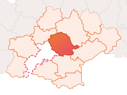
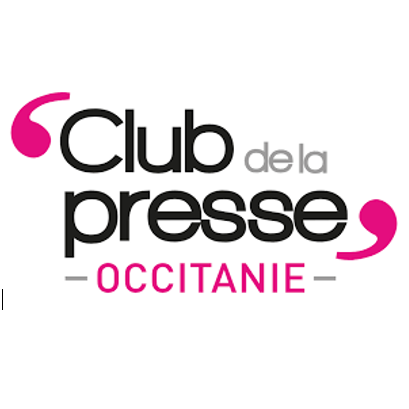

Ipsum Média, le Tarn en grand.
L'actu du Tarn dans votre poche, tous les jeudis. Reportages, interviews et infos exclusives sur ce qui fait vivre notre département.
Reportages
Sur le terrain, on va à la rencontre de celles et ceux qui font vivre le Tarn.
Newsletter hebdo
Notre fameuse newsletter, chaque jeudi, directement dans votre boîte mail.
Articles
Interviews, enquêtes et actualités locales publiées tout au long de la semaine.
Qui sommes-nous ?
Avant Ipsum Média, c'était d'abord des lycéens passionnés de journalisme qui réalisaient un journal trimestriel, toutes classes confondues. En juin 2024, Tom et Simon donnent naissance à Ipsum Média avec la création d'une newsletter hebdomadaire sur l'actualité du Tarn et nationale.
Nous sommes Ipsum Média, un collectif de jeunes qui avons lancé fin juin 2024 un média d'information local ayant pour but de réconcilier les habitants avec une vision négative du journalisme. En février 2026, nous avons franchi un cap en devenant un média associatif national, ouvert aux étudiants et jeunes qui veulent s'investir dans le journalisme, la communication et la production.
Nous avons pour but de promouvoir ce qui fait vivre le Tarn à travers des interviews, des reportages, des articles qui mettent en valeur notre département. Avec un âge médian de 20 ans, notre équipe retransmet des infos variées avec des sources comme des mairies, des institutions gouvernementales ou encore des entreprises et associations locales. Nous couvrons aussi, de temps en temps, des sujets nationaux qui ont un lien avec le Tarn.
À l'heure actuelle, nos informations sont principalement centrées sur le Tarn sud, mais nous couvrirons prochainement le Tarn nord. Notre ambition ne s'arrête pas là : nous préparons l'ouverture d'une rédaction en Haute-Garonne pour devenir, à terme, un média régional à l'échelle de l'Occitanie.
Vous souhaitez communiquer vos infos ou collaborer avec nous ? Contactez-nous à l'adresse email indiquée en bas de cette page.
Les fondateurs
Tom Duez
Président, rédacteur en chef
Étudiant en Sciences de l'information et de la communication à l'Institut Catholique de Toulouse, pour préparer un master en journalisme.
Cylia Espiau
Vice-présidente, rédactrice en chef adjointe et secrétaire de rédaction
Diplômée de l'ISCPA Toulouse, passionnée de sport automobile (F1, MotoGP).
Simon Rodier
Trésorier, rédacteur
Étudiant en licence de Science Politique, option journalisme, à l'ESJ Lille.
Ipsum Média, c'est une équipe organisée autour de la rédaction, de la communication, de la vie associative et de la formation. Et une vingtaine de bénévoles de tous âges et de tous horizons. Envie de nous rejoindre ?
Le Tarn aujourd'hui, la Haute-Garonne demain
Notre rédaction est aujourd'hui basée dans le Tarn. Nous avons un projet d'ouverture d'une rédaction en Haute-Garonne pour étendre notre couverture de l'actualité en Occitanie.
Labruguière · Castres · Mazamet · Albi · Gaillac · Bout du Pont de l'Arn · Lavaur · Saint-Sulpice · Labastide-Rouairoux

Nos collaborations
Média officiel des élections Miss Tarn depuis mai 2025.
Interview et relais de nos actions sur les ondes locales.

Nous sommes membres du Club de la presse Occitanie.
Article en collaboration avec l'émission de France 2.
Ipsum Média est membre du Club de la presse Occitanie et d'Animafac.
On vous emmène sur le terrain
Tous nos articles et notre newsletter sont sur Substack
On y publie nos reportages, interviews et notre lettre hebdomadaire chaque jeudi. Abonnez-vous pour ne rien manquer de l'actu du Tarn.
Envie de donner un coup de pouce à un média associatif tarnais indépendant ?
Ipsum Média fonctionne grâce à ses bénévoles et à celles et ceux qui nous soutiennent. Chaque don, même petit, nous aide à continuer.
Faire un don
Un soutien direct, sécurisé et rapide via HelloAsso pour nous aider à couvrir nos frais de fonctionnement.
Je fais un donDevenir bénévole
Rédaction, photo, vidéo, réseaux sociaux... rejoignez notre collectif et participez à la vie du Tarn.
Nous rejoindreOn peut aussi travailler avec vous
Mairies, établissements scolaires et universitaires : on propose plusieurs façons de collaborer avec Ipsum Média.
Couverture de vos événements
Reportages, interviews et articles pour vos événements locaux, institutionnels ou associatifs.
Ateliers & formations Bientôt
On prépare des ateliers d'initiation au journalisme pour lycées et universités.
Partenariats éditoriaux
Relais de vos actualités et communiqués auprès de notre communauté locale.
Contactez-nous
Une info à nous transmettre, une envie de collaborer, une question ?
Ou écrivez-nous directement à contact@ipsummedia.fr
Télécharger notre dossier de presseMentions légales
Ipsum Média est une association loi 1901 immatriculée au Registre National des Associations sous le n°W812010251.
SIRET 100 238 435 00018, code APE 58.13Y (Édition de revues et périodiques).
Nom de domaine : Infomaniak Network SA (infomaniak.com).
Hébergement du site : Netlify, Inc. (netlify.com).